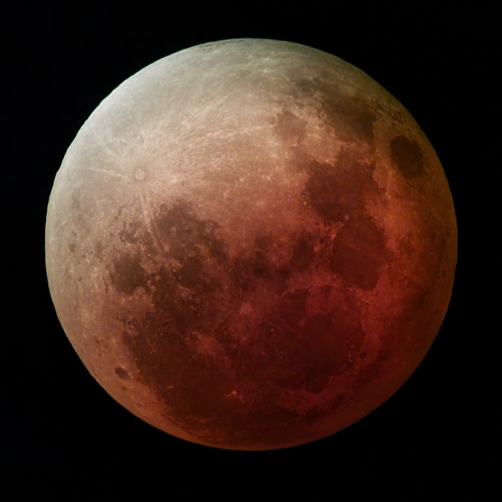

Esta es una ficción interactiva basada en el anime Berserk (1997). Vas a vivir la noche del Eclipse junto a Guts, y cada decisión que tomes cambiará el final de la historia.
La atmósfera es oscura y trágica; la violencia solo se sugiere.
Este video sirve para crear ambiente. Si no escuchás nada, activá el sonido con el ícono del parlante.